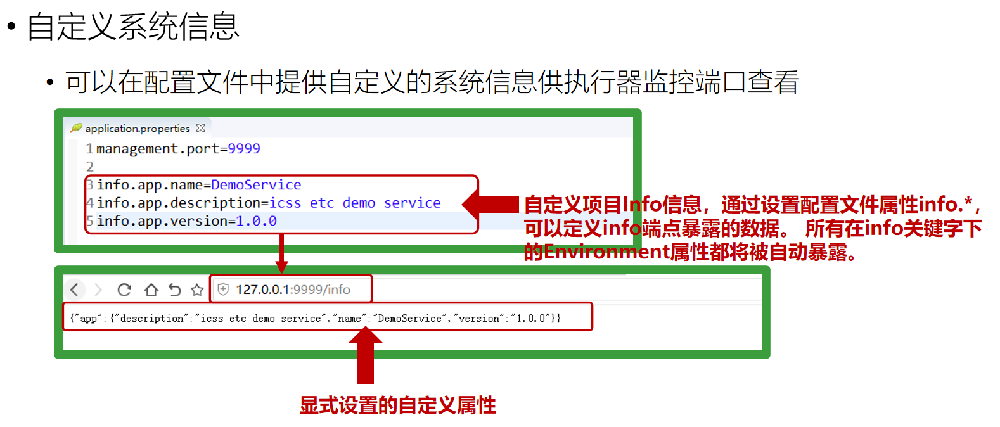

10月7日spring学习笔记
发布时间：
本文字数：225 字 阅读完需：约 1 分钟
actuator 健康监控
如果要查看应用指标或对应用进行监控，可以加入执行器actuator的依赖
监控项目是否alive
依赖 pom.xml
<dependency>
<groupId>org.springframework.boot</groupId>
<artifactId>spring-boot-starter-actuator</artifactId>
</dependency>
访问 http://127.0.0.1:8080/actuator/health 查看效果即可
配置文件
management.port：
指定访问这些监控方法的端口，与逻辑接口端口分离。如果不想将这些暴露在http中，可以设置 management.port = -1
management.address：
指定地址，比如只能通过本机监控，可以设置 management.address = 127.0.0.1
application.properties
# 端口号
management.server.port=9999
# 敏感信息访问限制(*表示可以访问所有)
management.endpoints.web.exposure.include=health, info

yaml配置文件
server:
port: 9090 # tomcat端口号
management:
server:
port: 9999
endpoints:
web:
exposure:
include:
- health
- info
info:
env:
enabled: true
info:
app:
name: SpringBoot项目
date: 2022-10-07
author: zr
spring:
zr:
name: 一汽解放
banner
banner配置文件
resources/banner.txt
████████ ██ ██ ██
░██░░░░░ ████ ░██ ░██
░██ ██░░██ ░██ █ ░██
░███████ ██ ░░██ ░██ ███ ░██
░██░░░░ ██████████░██ ██░██░██
░██ ░██░░░░░░██░████ ░░████
░██ ░██ ░██░██░ ░░░██
░░ ░░ ░░ ░░ ░░
关闭banner
BootTestApplication.java
package com.zr;
import org.springframework.boot.Banner;
import org.springframework.boot.SpringApplication;
import org.springframework.boot.autoconfigure.SpringBootApplication;
@SpringBootApplication
public class BootApplication {
public static void main(String[] args) {
// SpringApplication.run(BootApplication.class, args);
SpringApplication application = new SpringApplication(BootApplication.class);
application.setBannerMode(Banner.Mode.OFF);
application.run(args);
}
}
Powerd by YlBlog(玉龙博客)